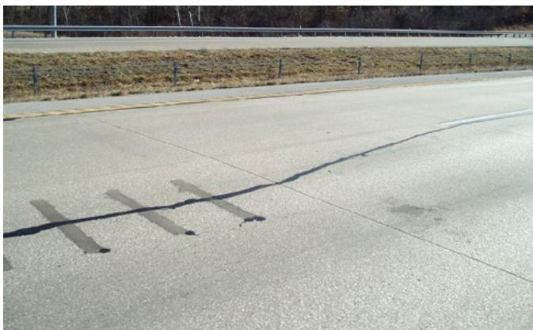
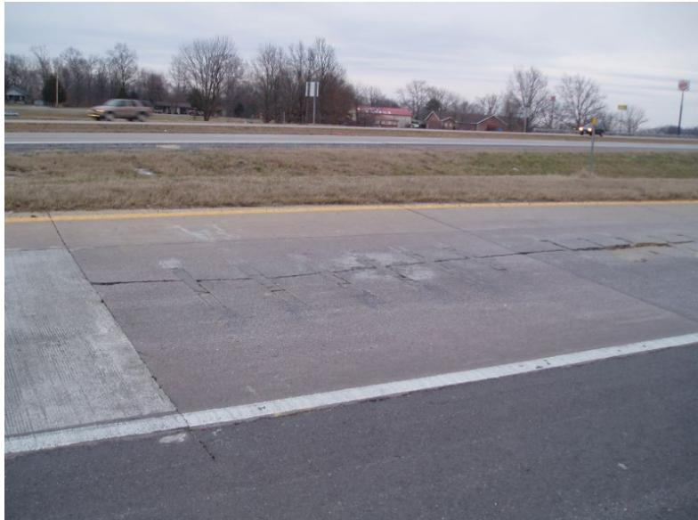
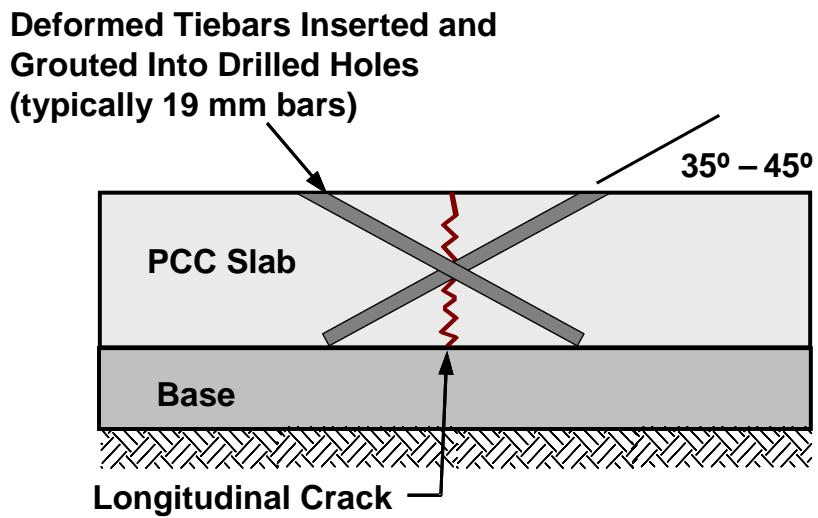
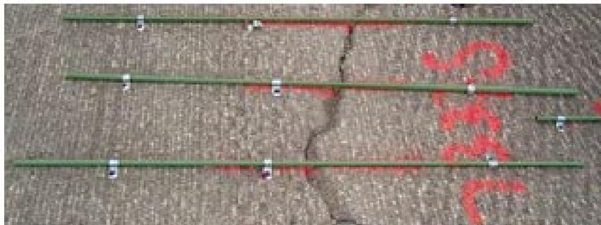
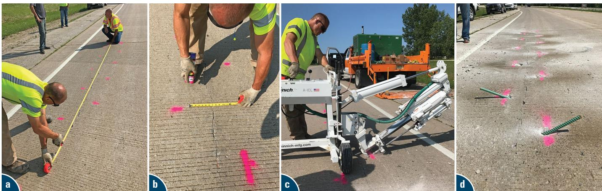
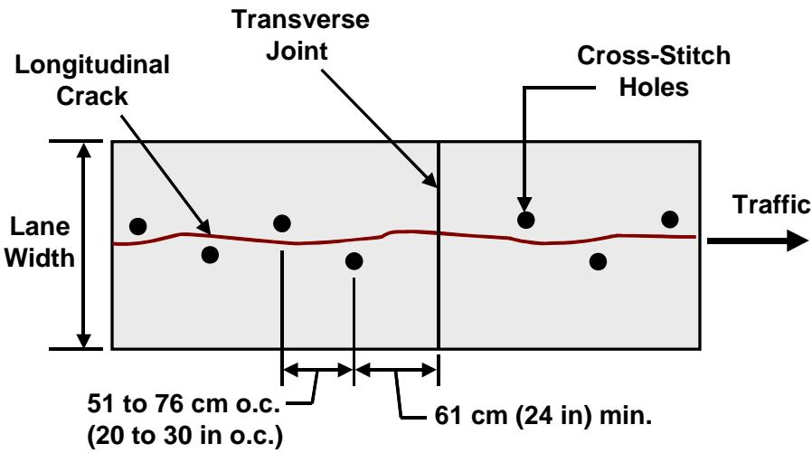
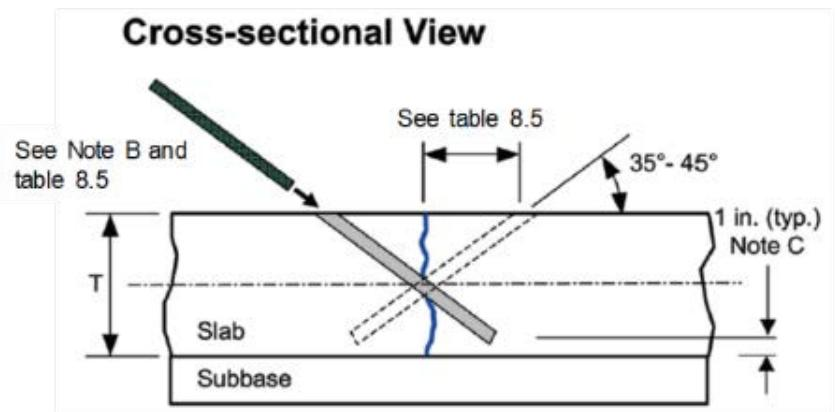
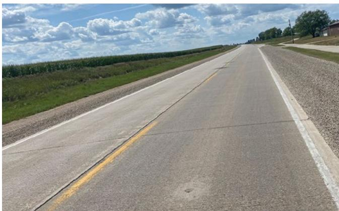

Cross Stitching
Cross stitching is a preventive‑maintenance treatment applied to relatively new concrete pavements that display early‑age longitudinal cracks or non‑working joints, with the goal of stabilising those fractures and preserving load transfer across the slab [1][3]. The technique works by drilling angled holes (typically 35°–45°) across the crack, inserting epoxy‑bonded deformed steel tie bars about 0.75 in in diameter with at least one‑inch cover to the slab bottom, and spacing the bars roughly every 20 in for heavy traffic or 30 in for lighter traffic [2][3]. By tightly binding the two sides of the crack, cross stitching maintains aggregate interlock, reduces slab deflection, water pumping and reflective cracking, and thereby extends the service life of the pavement [2][4].
Sources (6)
Purpose and treatment objectives
Cross stitching is employed as a preventive‑maintenance treatment on newer concrete pavements that show early‑age cracking, aiming to mitigate those initial cracks before they evolve into more severe distress. The method is also directed at longitudinally oriented cracks in concrete overlay panels, where it stabilizes the cracks and prevents their widening, thereby preserving panel integrity and extending service life under heavy traffic or dynamic loading conditions. In addition to longitudinal cracking, cross stitching addresses corner‑cracking that originates from inadequate load transfer at transverse joints by tightening the crack and maintaining aggregate interlock, which reduces slab deflection, water pumping, and further crack propagation. The technique is also used to limit reflective cracking when an unbonded overlay is placed over existing cracks, because holding the underlying longitudinal cracks tight before overlay placement helps prevent the initiation and growth of reflective cracks through the new surface. Installation involves drilling angled holes or slots across the crack, inserting epoxy‑bonded deformed bars with at least a one‑inch cover to the bottom of the hole, and spacing the bars approximately 20 inches apart for heavy traffic or 30 inches apart for light traffic. By maintaining good load transfer across the treated crack through aggregate interlock, cross stitching reduces deflections, pumping, and further deterioration of the pavement structure.
Cross stitching is applied to concrete pavements that are otherwise in relatively good condition but exhibit longitudinal joints or cracks that have become non‑working, meaning they no longer provide effective load transfer [4]. These non‑working longitudinal cracks may be adjacent to settled slab sections, may occur where original tie bars are missing or have failed, and often appear near wheelpaths where vertical and horizontal movements tend to widen the fracture surface [5][6]. The loss of load transfer associated with such cracks leads to slab migration, loss of aggregate interlock, separation of adjacent lanes or shoulders, faulting at centerline joints, pumping, and overall degradation of ride quality and structural integrity [4][6]. When the distress reaches this stage, it compromises uniform stiffness and creates uneven support for any overlay, increasing the risk of uncontrolled panel cracking and premature overlay failure [5].
[1] — Ch. 6 (p. 68); [2] — Cross-Stitching (pp. 32–33); [3] — Ch. 4 (pp. 164–190), Ch. 18 (pp. 394–395); [4] — Ch. 6 (p. 129), Ch. 8 (pp. 187–210); [5] — App. A (pp. 98–108); [6] — Ch. 8 (pp. 160–177)
Cross‑stitching is applied to non‑working longitudinal joints and cracks that are still in relatively good condition, where the method consists of drilling an angled hole through the joint or crack, inserting a deformed tie bar typically 0.75 in. in diameter, and securing it with epoxy or grout [4]. By tightly binding the two sides together the technique preserves aggregate interlock and load‑transfer capacity, which stops vertical or horizontal widening of the joint and prevents slab migration [2][4]. The principal intent across the guides is to stabilize existing longitudinal cracks and halt their further opening, thereby preventing additional deterioration of the overlay panel or pavement structure [2][3]. This action also slows the progression of damage by limiting deflection, water pumping, and the onset of reflective cracking that can develop when an overlay is placed over a cracked joint [3]. Because the crack remains closed, load transfer across the joint is maintained, which indirectly extends the service life of the pavement as a secondary benefit of the preservation measure [3][4]. While the technique does not aim to restore lost structural capacity in heavily damaged sections, it does re‑establish continuity at the cracked location, effectively restoring functionality to that portion of the slab [4].
The figure below illustrates the top, cross-sectional, and end views of this slot-stitching technique.

Completed slot-stitching of a longitudinal crack on a concrete pavement. [4]The image displays a concrete roadway surface featuring a long, dark longitudinal crack that has been treated with several parallel slots cut across it.
Cross‑stitching is applied to longitudinal cracks that have developed adjacent to settled zones of concrete pavements and to joints lacking functional tie bars, whether because the original bars failed or were never installed. The technique involves inserting grout‑filled tie bars at a slight angle across the crack before an overlay is placed, creating a stable, uniform support condition that restores the intended load‑transfer capability of the joint. By repairing the damaged area and providing a functional load‑transfer path, cross‑stitching directly restores functionality of the pavement structure. At the same time, when applied to non‑working cracks that are still in acceptable condition, the method reinforces those cracks, restraining vertical and horizontal movement, keeping the crack tight, and thereby slowing further deterioration. This reinforcement prevents slab migration, preserves aggregate interlock, and stops backfill materials such as epoxy or grout from infiltrating the joint space, which contributes to extending the pavement’s service life. Consequently, across the guides the objective of cross‑stitching is described both as a repair action that restores functionality for an overlay and as a preservation treatment intended to forestall additional degradation, decelerate distress, and prolong useful life. [2][3][4][5][6]
[2] — Cross-Stitching (pp. 32–33); [3] — Ch. 4 (pp. 164–190), Ch. 18 (pp. 394–395); [4] — Ch. 8 (pp. 187–210); [5] — App. A (pp. 98–108); [6] — Ch. 8 (pp. 160–175)
Distress characterization and causes
The distress that cross‑stitching is intended to treat consists of longitudinal cracks and nonworking longitudinal joints that occur in concrete overlay panels or slabs situated within the wheel paths of driving lanes or at lane‑shoulder separations, where tie bars have failed to hold contraction joints together [2][4][6]. These cracks are generally tight fissures—typically less than 0.38 in. wide—and extend along the length of a panel without having broken the slab into more than four or five separate pieces, indicating that the concrete remains largely intact despite the opening [4][6]. The severity of the distress is described as moderate to low; the cracks permit some loss of aggregate interlock and reduced load transfer, manifesting early symptoms such as pumping, the onset of faulting, and slight vertical or horizontal widening, but they have not yet produced spalling or extensive fragmentation [2][4][6]. If left untreated, the progressive widening of these longitudinal openings can diminish the structural integrity of the overlay, especially under heavy or dynamic traffic loads, leading to slab migration, increased faulting rates, loss of ride quality, and eventually spalling in transverse joints, all of which pose safety hazards and raise maintenance costs [2][4][6]. The guides characterize the progression as a slowly advancing process; cross‑stitching arrests further widening by anchoring tie bars at angles of roughly 35–45°, thereby maintaining tight joint closure, preserving load transfer, and slowing deterioration, which in turn reduces faulting rates and extends service life [4][6]. By preventing vertical and horizontal movement of the cracked sections, cross‑stitching helps to maintain aggregate interlock and ride quality, avoiding operational consequences such as reduced load‑carrying capacity, compromised safety for motorists, and increased frequency of pavement repairs [2][4][6].
[2] — Cross-Stitching (pp. 32–33); [4] — Ch. 8 (pp. 203–210); [6] — Ch. 8 (pp. 173–175)
Longitudinal cracks in concrete overlay panels are primarily driven by repeated heavy traffic and dynamic loading that can surpass the panel’s design capacity, leading to progressive widening of the cracks [2]. When a longitudinal joint or crack opens even modestly—typically beyond about 0.03 in.—the aggregate interlock that normally transfers wheel loads collapses, causing loss of shear capacity and allowing the slab to deflect under traffic [4][3]. The loss of interlock initiates a pumping mechanism in which slab movement draws water and fine foundation material into the joint, further weakening edge support and accelerating crack widening and joint faulting [3][4]. Drainage deficiencies that permit water to accumulate near slab edges exacerbate this pumping action, as evidenced by deposits of sub‑base material on pavement shoulders adjacent to transverse joints [3]. High relative deflections measured with falling‑weight‑deflectometer testing indicate inadequate structural capacity at transverse joints, a condition often compounded by the same loss of load transfer across longitudinal cracks [3][4]. Pre‑existing longitudinal joints or cracks act as stress concentrators, so any overlay placed above them is prone to reflective cracking unless the underlying discontinuities are restrained [3]. Additional contributors include contraction of thin (approximately 4‑in.) lean concrete bases beneath the pavement, which generates uncontrolled longitudinal cracking that propagates under repeated wheel‑path loading [4]. The combined effects of heavy traffic, insufficient aggregate interlock, water infiltration, drainage failure, and base contraction therefore create a cycle of increased deflection, pumping, loss of support, corner breaks, and joint faulting that rapidly degrades the pavement’s structural performance [2][3][4].
Cross‑stitching is applied when the existing pavement substrate does not provide sufficient, uniform support and its joints are unable to transfer shear effectively. Instability of panels or panel fragments that move under traffic creates differential movement that can lead to buckling, compression failures, or cracking of a concrete overlay. Longitudinal cracks that terminate at settled zones also generate differential movement, and repairing them with cross‑stitching helps to provide stable, uniform support for an overlay. Abrupt changes in structural composition caused by lane widening or full‑depth asphalt repairs introduce additional discontinuities that may produce buckling or compression failures in the new concrete layer. The problem is intensified when original tie bars have failed or were never installed, leaving joints without adequate shear reinforcement and accelerating delamination of the overlay. By stitching across the compromised joint and retrofitting new tie bars—or using slot‑stitching—before placing the concrete layer, the technique restores uniform support and reestablishes load transfer. Missing tie bars or other construction oversights weaken aggregate interlock, permitting adjacent slabs to drift apart along lane lines, shoulders, or centerline joints. A secondary driver is cracking that propagates upward from a relatively thin (approximately 102 mm) lean‑concrete base beneath the pavement, combined with faulting at transverse contraction joints that were not doweled; these factors induce vertical and horizontal movements of cracks near wheel paths, causing them to widen, diminishing load transfer, and hastening overall pavement deterioration. The combined mechanisms—panel instability, differential movement from structural discontinuities, absent or failed tie bars, thin‑base cracking, and nondoweled joint faulting—accelerate the distress addressed by cross‑stitching and justify its use as a preservation method. [2][3][4][5][6]
[2] — Cross-Stitching (pp. 32–33); [3] — Ch. 4 (pp. 164–190), Ch. 18 (pp. 394–395); [4] — Ch. 8 (pp. 187–203); [5] — App. A (pp. 98–108); [6] — Ch. 8 (pp. 173–175)
Applicability and treatment selection
Cross stitching is appropriate for concrete pavements that display longitudinal cracks, particularly when the pavement is relatively new and the cracks are early‑age in nature [1][3]. The method can be employed on any type of concrete overlay, including thin bonded overlays as slender as six inches, making it suitable wherever such longitudinal cracking occurs [2]. It is considered a viable alternative to full‑depth repair or slab replacement when the crack can be sealed and a complete removal of the slab is undesirable [3]. The technique is effective under both heavy and light truck traffic, with recommended hole spacings of approximately twenty inches for heavy traffic conditions and thirty inches for lighter traffic environments [3][2]. Heavy‑traffic or dynamic loading locations are especially favorable because cross stitching stabilizes crack widening and contributes to extending the structural life of the panel [2]. No special environmental exposures or site constraints beyond those typical of normal concrete pavement installations are indicated as limiting factors for the use of cross stitching [1][3].
The following figure illustrates longitudinal cracking in pavement sections where such repair techniques are applicable.

Longitudinal cracking in a wide concrete pavement lane. [3]The image displays a paved roadway surface exhibiting distinct longitudinal cracks running parallel to the direction of traffic.
Cross‑stitching may be employed on concrete pavements whose longitudinal joints or cracks are classified as non‑working—that is, they no longer open and close with temperature—and where the adjacent slab material remains sound. The method is limited to wheel‑path locations where the joint or crack is relatively tight; MnDOT specifies a maximum width of 0.38 in (≈9.7 mm). Acceptable cracks include faulted construction joints, lanes or shoulders that are beginning to separate, and centerline joints that are starting to split, provided they are not severely deteriorated and the lower portion of the slab is intact. For continuously reinforced concrete pavement (CRCP), TxDOT restricts use to situations in which lane separation is occurring at a longitudinal construction joint. The technique can also be applied to drifted slabs without first moving them, as long as a sand‑cement grout is placed to keep backfill from entering the gap. Cross‑stitching is not appropriate where the pavement contains working transverse cracks that open and close with temperature changes, extensive cracking that breaks a slab into more than four or five pieces, or any condition that compromises the surrounding concrete. The source does not specify additional traffic volume, environmental exposure, or site‑specific limits beyond these pavement‑condition criteria. [1][2][3][4]
[1] — Ch. 6 (p. 68); [2] — Cross-Stitching (pp. 32–33); [3] — Ch. 4 (pp. 164–167); [4] — Ch. 8 (pp. 187–204)
Cross‑stitching should only be applied to joints or cracks that are non‑working, relatively intact, and narrow; it is unsuitable when the longitudinal joint shows signs of deterioration, active opening‑closing movement, or exceeds about 0.38 in. width [4][6]. Transverse cracks that expand and contract with temperature are also inappropriate for cross‑stitching because the rigid reinforcement would lock slab movement and can cause adjacent cracking or concrete spalling over the bars [4][6]. When a pavement exhibits severe longitudinal distress, such as multiple parallel cracks that have fragmented a slab into more than four to five pieces, cross‑stitching is not an adequate repair and full slab replacement becomes the preferred intervention [4][6]. If crack widths or deterioration exceed the limits for cross‑stitching, alternative stitching methods like slot‑stitching, which can accommodate larger openings, should be considered instead [4]. Cross‑stitching is also inappropriate for tying newly constructed lanes; other repair or maintenance techniques are recommended in those situations [6]. An updated project review that reveals pavement thickness outside the values prescribed by industry guidelines (e.g., ACPA 2001b, IGGA 2010) or a stitch layout conflicting with those recommendations mandates abandoning cross‑stitching in favor of another preservation, rehabilitation, or repair approach [4]. In cases where deterioration reaches a high level—demonstrated by poor performance in the most deteriorated sections of studies—the effectiveness of cross‑stitched repairs declines, indicating that an alternative rehabilitation strategy should be employed [6].
[4] — Ch. 8 (pp. 187–210); [6] — Ch. 8 (pp. 173–175)
Condition assessment and timing
Determining the need for cross‑stitching begins with a comprehensive visual inspection of the concrete pavement surface and joints. Inspectors look for deposits of foundation material on the shoulders adjacent to transverse joints, which indicate pumping and possible loss of support beneath the slab. Development of faulting in transverse joints is also recorded, although transverse cracks themselves are excluded from stitching because they move with temperature changes. Particular attention is given to longitudinal cracks and joints that lie within the wheel path; each crack is measured for opening width and only those that remain relatively tight are considered candidates for stitching. The commonly applied threshold, as cited by MnDOT, limits acceptable crack opening to a maximum of 0.38 in., with similarly tight faulted longitudinal joints qualifying for treatment. Lane or shoulder separation at construction joints is another visual cue that cross‑stitching may be required. When slabs have drifted, the inspector verifies that backfill material will not infiltrate the gap so that a sand‑cement grout filler can be placed without first attempting to reposition the slabs. In addition to visual cues, a load‑transfer assessment is performed, most often with a Falling Weight Deflectometer, to measure relative deflections across transverse joints; unusually high differential deflection signals poor load transfer and supports the decision to stitch. The FWD results are compared against typical acceptable limits for joint deflection, although specific numeric thresholds are not prescribed in the sources, the presence of markedly higher values is taken as an indicator. Inspectors also confirm that the existing pavement thickness matches the original design and that current industry guidelines such as ACPA 2001b or IGGA 2010 remain applicable to the retrofit, ensuring that the estimated quantities of stitching material are still appropriate. Any significant changes in overall pavement condition since the project was designed are documented, because deterioration beyond anticipated levels may alter the locations where stitching is justified. Field observation of panel stability is required; panels or fragments that appear unstable or exhibit visible rocking under traffic are flagged for full‑depth repair rather than stitching, while stable panels with longitudinal cracks adjacent to settled areas are candidates for cross‑stitching. No laboratory testing is mandated for the decision; the determination relies entirely on on‑site observations of movement, crack location, and load‑transfer performance. [3][4][5]
[3] — Ch. 4 (pp. 189–190); [4] — Ch. 8 (pp. 203–206); [5] — App. A (pp. 98–99)
Cross stitching is applied as a preventive maintenance technique on relatively new concrete pavements that have begun to exhibit early‑age cracking, before the distress progresses to more severe stages [1]. The treatment is also indicated when longitudinal cracks are already present in an overlay panel and there is a risk of further widening, particularly under heavy traffic or dynamic loading conditions, where the method stabilizes the crack by mechanically interlocking deformed steel tie bars across it [2]. Across the guides, the preferred timing for cross stitching corresponds to cracks that are at an early‑to‑moderate stage of deterioration—open enough that they have not sealed tightly but still vulnerable to additional opening, deflection, or water pumping [3]. In this condition the crack can act as a conduit for reflection cracking if an overlay is placed, so inserting deformed steel bars across the joint before any overlay installation (or as a stand‑alone repair) holds the crack closed and preserves aggregate interlock and load transfer [3]. The guides note that cross stitching may be used in conjunction with crack sealing when the crack is not tight at the time of repair, providing an additional measure to maintain joint integrity [3]. By addressing cracks at these early or early‑to‑moderate stages, cross stitching serves as an alternative to full‑depth repair or slab replacement for tight, non‑working longitudinal joints [3]. The guides agree that the method is applicable to all types of concrete overlays, enhancing structural integrity and longevity especially in areas subjected to heavy traffic or dynamic loads [2].
Cross‑stitching is applied to non‑working longitudinal joints or cracks that remain tight and exhibit little or no distress[4][6]. The technique is typically used when the crack width in the wheel path is less than about 0.38 in., indicating that the joint has not yet widened or spalled[4]. It is also indicated when longitudinal cracks appear adjacent to settled sections of pavement, suggesting loss of uniform support beneath the slab[5]. In such cases the original tie bars may be missing or have failed, and cross‑stitching provides a retrofit to restore load transfer before an overlay is placed[5][4]. The method is appropriate when cracks have ceased active movement but are beginning to fault or show early separation, especially where lanes or shoulders are pulling apart[6]. Because the pavement surface remains largely sound, cross‑stitching serves as a preservation measure rather than a substitute for full‑depth repair or slab replacement[4][6]. The approach is unsuitable once cracks become open‑working, when transverse cracking dominates, or when slabs have fractured into more than four to five pieces with multiple extensive cracks[4][6].
[1] — Ch. 6 (p. 68); [2] — Cross-Stitching (pp. 32–33); [3] — Ch. 4 (pp. 164–167), Ch. 18 (pp. 394–395); [4] — Ch. 6 (p. 129), Ch. 8 (pp. 187–210); [5] — App. A (pp. 98–108); [6] — Ch. 8 (pp. 160–177)
Materials and repair details
Cross‑stitching is a preservation method employed to strengthen non‑working longitudinal cracks or construction joints by inserting deformed steel tie bars that are bonded with epoxy or an approved sand‑cement grout. The repair begins with locating and marking the crack, after which holes are drilled at an angle of roughly 35°–45° relative to the pavement surface so that each bar intersects the joint near mid‑depth while maintaining about one inch of cover from both the top and bottom slab faces. Hole diameters are selected no larger than 0.375 in. greater than the tie‑bar diameter, which is typically 0.75 in., providing a tight fit yet allowing space for the bonding material. The depth of each hole is stopped approximately one inch above the slab bottom to prevent the epoxy or grout from escaping during backfill. Prior to bar insertion the holes are cleaned with oil‑free, moisture‑free air blasting and any saw slurry is removed at least three to four feet from the slot perimeter when slots are present. Each tie bar is fully coated with an intact epoxy layer of adequate thickness, free of surface defects, and is cut to the length required by design before being placed alternately on opposite sides of the crack. The bars are then inserted into the prepared holes, rotated to distribute the resin and expel air, and excess material is removed so that the epoxy or grout surface is flush with the surrounding concrete. Spacing of the installed bars follows traffic intensity guidelines: for sections subjected to heavy truck loads bars are placed about every twenty inches, while lighter‑traffic areas may use spacings of roughly thirty inches, yielding an allowable range of 20–30 in. The technique is typically executed before an unbonded concrete overlay is placed, allowing the tie bars to keep the crack tight as the new layer cures; surface‑mounted “stapled” tie bars can also be added over the same cracks for supplementary restraint. Cross‑stitching is intended for relatively tight cracks less than approximately 0.38 in. wide and for longitudinal construction joints that remain intact, and it is not recommended for opening transverse cracks or for continuously reinforced concrete pavement except where lane sections are separating at construction joints. All materials—including the deformed steel tie bars, epoxy, and any grout—must conform to project specifications, be sourced from approved vendors, and be accompanied by the required certifications before installation.
Cross‑stitching is a preservation technique used to reinforce nonworking longitudinal cracks that are still in relatively good condition. The repair begins by drilling shallow‑angled holes across the crack—typically at an inclination of three to four degrees—to a depth that reaches the mid‑depth of the pavement. Each hole is sized so that its diameter does not exceed 9.5 mm larger than the tie bar that will be placed within it. A deformed steel tie bar, 19 mm in diameter, is then grouted into each hole; the bars are positioned on alternating sides of the crack and spaced at intervals ranging from 500 mm for sections subjected to heavy truck traffic to 750 mm where loads are lighter. After the holes are cleaned by blowing out debris, epoxy or a compatible grout is poured, leaving enough space for the bar to be set. The tie bar is inserted, excess epoxy is removed so that the surface remains flush with the pavement, and the backfill material—preferably a sand‑cement grout—is applied behind the bars to prevent any grout from entering the joint space between slabs. Once the epoxy or grout has fully cured, traffic can resume. This method has been successfully applied on pavements such as a 229‑mm jointed plain concrete slab to control reflection cracking. [2][3][4][6]
The figure below illustrates this cross-stitching process applied to a longitudinal crack.

Cross-stitching of longitudinal crack (ACPA 1995). [6]The figure illustrates the cross-stitching technique, showing deformed tiebars inserted and grouted into drilled holes within a PCC slab. This visual representation demonstrates how the method stabilizes fractures and preserves load transfer by tightly binding the two sides of a crack.
[2] — Cross-Stitching (pp. 32–33); [3] — Ch. 4 (pp. 164–167), Ch. 18 (pp. 394–395); [4] — Ch. 8 (pp. 187–208); [6] — Ch. 8 (pp. 173–177)
Cross stitching is applicable primarily to relatively new concrete slabs that display early‑age cracking, because the existence of fresh cracks in a recently placed pavement is the key existing‑pavement condition governing its effectiveness [1]. The technique can be employed with any type of concrete overlay provided the overlay thickness meets a minimum of six inches, which has been identified as the thinnest successful application reported across sources [2]. Successful performance also depends on the presence of heavy traffic or dynamic loading conditions that threaten crack propagation, since the method is intended to improve load transfer under such stresses [2][3]. The reinforcement consists of deformed steel tie bars whose geometry should be comparable to standard dowels, with diameters selected to develop shear resistance similar to those dowels [3]. These tie bars are installed across the crack and bonded to the surrounding concrete using a compatible epoxy adhesive or grout that creates a mechanical interlock capable of distributing loads through the repaired section [2][3]. Each bar is placed in a drilled hole that must retain at least one inch of cover at its base, and drilling should stop short of penetrating completely through the slab so that the epoxy or grout remains within the cavity during backfill [3]. Hole spacing is dictated by traffic intensity: for routes dominated by heavy trucks centers of about twenty inches are recommended, while lighter‑traffic conditions can accommodate spacings near thirty inches; designs seeking maximum load transfer may reduce spacing to as little as twelve inches between bar centers [3]. Prior to installation the crack should be tight or sealed so that aggregate interlock can function, limiting deflection, pumping, and further deterioration of the repaired area [3]. Performance can be compromised when adjacent transverse joints exhibit material pumping, joint faulting, or high relative deflections identified by falling‑weight deflectometer testing, as these signs indicate inadequate load transfer that may require additional preservation measures such as cross stitching [3]. When all material properties, bonding compatibility, and pavement condition criteria are satisfied, the cross‑stitch system enhances structural integrity and extends the service life of concrete overlay panels subjected to heavy traffic or dynamic loading [2].
Cross‑stitching is intended for non‑working longitudinal joints or cracks that remain relatively tight, undamaged, and less than approximately 0.38 in. wide, and it should not be applied to transverse joints that open and close with temperature changes or to slabs fractured into more than four or five pieces. [4][6] The method requires a deformed steel tie bar of 0.75 in. (19 mm) diameter that meets specified strength, size, and epoxy‑coating requirements, with the coating intact and of the prescribed thickness. [4][6] Bar length is selected so that the bar extends roughly one inch below the top surface and about one inch above the bottom of the slab, matching the actual slab thickness determined on site. [4][6] Holes are drilled through the joint at an angle; most guides specify a drilling angle between 35° and 45° relative to the pavement surface, while another source recommends a shallow angle of about three to four degrees, and the drill diameter must not exceed the bar diameter by more than 0.375 in. [4][6] After drilling, the hole and surrounding slot must be cleaned of saw slurry, dust, moisture, or other debris by air‑blasting or media blasting to a distance of three to four feet beyond the slot perimeter before epoxy is placed. [4][6] The hole is completely filled with epoxy so that the epoxy flushes with the concrete face after bar insertion, and the adjacent joint is sealed with an approved caulk applied only along the bottom and sides of the slot and limited to a half‑inch beyond the joint edge to prevent backfill migration. [4][6] A sand‑cement grout is used as the backfill material because it blocks epoxy movement while providing adequate strength, and all repair materials—including epoxy, grout, sealant, and tie bars—must be sourced from approved vendors and remain within their shelf life. [4][6] Bar spacing is dictated by traffic loading, with typical spacings of about 20 in. on heavy‑truck routes and roughly 30 in. on lighter‑traffic roads, and offsets are oriented perpendicular to the joint. [4][6] When an overlay is planned, cross‑stitching should be performed before placing a concrete overlay thinner than six inches because thin cover can expose tie bars to high shear loads that generate tensile stresses at the interface bond, accelerating bond loss and risking overlay failure. [5] Provided that the material properties, dimensional tolerances, coating integrity, cleaning protocols, epoxy fill criteria, sealant limits, backfill compatibility, and pavement‑condition checks are satisfied, cross‑stitching can restore load transfer across non‑working joints without inducing additional distress; failure to meet any of these requirements reduces performance and may cause new cracking. [4][6]
[1] — Ch. 6 (p. 68); [2] — Cross-Stitching (pp. 32–33); [3] — Ch. 4 (pp. 164–190); [4] — Ch. 8 (pp. 187–210); [5] — App. A (p. 108); [6] — Ch. 8 (pp. 173–177)
Treatment procedures
Before any cross‑stitching work begins the agency and contractor must verify that all repair materials satisfy project specifications, are sourced from an approved vendor, and that the deformed tie bars are the correct size, strength and coating, with epoxy within its shelf life and free of surface damage. The longitudinal crack is identified and clearly marked on the overlay surface. If the crack is open it is sealed with an approved caulking applied to the bottom and sides of the joint, taking care that the sealant does not extend more than a half‑inch from the joint. Drill locations are laid out according to the retrofit plan, offset at right angles to the crack on alternating sides and spaced roughly 20 inches apart for heavy truck traffic or about 30 inches for lighter traffic. A drilling fixture is set to an angle of approximately 35 to 45 degrees so that each bore reaches mid‑depth without punching through the slab bottom, leaving a one‑inch cover at the bottom and also roughly one inch from the top surface. Hole diameters are limited to no more than 0.375 in larger than the tie‑bar diameter, which is typically 0.75 in, and a shallow pilot hole may be made first to give the drill a bite. After drilling an oil‑free, moisture‑free air stream is blown through each hole to remove dust; a second blast is performed if the openings become dirty or wet before epoxy placement. The appropriate quantity of epoxy (or grout) is then injected so that it will fill the cavity when the fully coated deformed tie bar is inserted. The tie bar is rotated into the hole to distribute the resin, expel trapped air, and any excess epoxy is removed so that the surface is flush with the surrounding pavement. When required, the repaired area may be diamond‑grinded afterward to restore the pavement profile. Traffic may resume once the epoxy has fully set, indicating completion of the curing phase.
To perform cross‑stitching on a crack, the pavement surface is first prepared by drilling a series of holes that intersect the crack at a consistent spacing; each hole should be made with a hydraulic‑powered drill whose diameter does not exceed 9.5 mm beyond the tie‑bar diameter and, for longitudinal cracks, the bore is set at a shallow angle of roughly three to four degrees relative to the surface. After drilling, compressed air is blown through the holes to expel dust and debris. The voids are then partially filled with a bonding material—epoxy for typical applications or grout when a cementitious matrix is preferred—leaving sufficient volume to accommodate the deformed tie bar. The tie bar is placed into each hole, allowing it to sit within the remaining space of the epoxy or grout, after which any surplus binder is removed so that the repaired area is flush with the surrounding pavement. The assembly is left undisturbed until the epoxy or grout has fully cured, at which point traffic can be restored and the crack remains tightly tied, limiting vertical and horizontal movement and preserving load transfer across the joint. [2][3][4][6]
The figure below illustrates how reinforcing steel is anchored to concrete pavement to bridge a tight crack.

Reinforcing steel anchored to concrete pavement over tight crack [3]The image displays a longitudinal crack in a concrete surface that has been stabilized by installing multiple horizontal reinforcing bars. Tie bars have also been stapled to the surface of the existing pavement over existing longitudinal cracks for the same purpose. This technique is used prior to overlay placement to help hold longitudinal cracks tight.
[2] — Cross-Stitching (pp. 32–33); [3] — Ch. 4 (pp. 164–167); [4] — Ch. 8 (pp. 187–208); [6] — Ch. 8 (pp. 173–177)
Implementation of cross‑stitching begins with locating and marking the crack on the pavement surface, followed by verification that the planned tie‑bar pattern is compatible with the existing slab thickness and does not intersect transverse joints or other cracks. [2][4] The layout is then approved and hole locations are marked on alternating sides of the crack at regular intervals dictated by traffic level, typically 20 in spacing for routes carrying heavy trucks and about 30 in for lighter‑traffic lanes. [3][4] Drilling is performed with a hydraulic or pneumatic cross‑stitching rig equipped with a fixture that holds the bit at the prescribed angle and controls depth so that penetration stops roughly one inch above the slab underside, preventing grout from escaping through the bottom of the slab. [2][4] The drill diameter is limited to no more than 0.375 in larger than the deformed tie‑bar, which is commonly 0.75 in in diameter, thereby minimizing surface damage. [4] Immediately after each hole is made an oil‑free, moisture‑free air stream is introduced with dedicated air‑blasting equipment to remove dust and debris; a second blast is required if the cavity becomes contaminated before epoxy placement. [4] The deformed steel tie bars, pre‑coated with an intact epoxy film, are inserted into the cleaned holes, ensuring at least one inch of cover beneath the slab surface. [3][4] Epoxy adhesive or grout is then placed in the cavity in the specified volume so that the bar sits below the pavement surface with the epoxy flush; excess material is removed after the bar is rotated into position. [2][4] If concrete removal has created dowel‑slot patches, those slots are first media‑blasted to eliminate saw slurry and then air‑blasted, extending the blast three to four feet beyond the slot perimeter, after which a sealant caulk no more than half an inch from the joint is applied to prevent intrusion of patch material. [4] Traffic control measures remain in place until the epoxy has fully cured and the surface finish is completed, ensuring safety for moving vehicles during the repair period. [4] The guides do not prescribe specific ambient temperature or humidity limits, but they require compliance with OSHA air‑quality standards during drilling and cleaning operations. [4]
The following figure illustrates the dimensions required for cross-stitching overlay panels.

Key steps in cross-stitching: (a) marking hole locations on alternating sides of the crack, (b) marking hole offsets from the crack, (c) drilling holes with a cross-stitching rig, and (d) inserting and grouting bars into the holes after drilling [2]The figure illustrates the sequential process of cross-stitching, beginning with marking hole locations on alternating sides of the crack.
Cross‑stitching requires a hydraulic‑powered concrete drill sized no more than 9.5 mm larger than the 19‑mm deformed tie bar, followed by blowing air to clean the hole, filling it with epoxy, inserting the tie bar, and trimming excess material before traffic returns once the epoxy has fully set. The bars are spaced at 500‑mm intervals when heavy truck traffic is expected and at 750‑mm intervals for lighter traffic or interior highway lanes. Proper hole placement at mid‑depth of the crack and consistent spacing are essential to achieve adequate aggregate interlock. [2][3][4][6]
The figure below illustrates a schematic of the cross-stitch tiebar installation process.

Schematic of cross-stitch tiebar installation (ACPA 2001a). [6]The figure displays a schematic view of a concrete pavement lane showing the placement of black dots representing drilled holes along a longitudinal crack. It illustrates that these cross-stitch holes are spaced at intervals and alternated to each side of the crack, which is consistent with the method used to tie drifted slabs together. The diagram also indicates a minimum distance from the transverse joint to ensure proper installation geometry.
[2] — Cross-Stitching (pp. 32–33); [3] — Ch. 4 (pp. 164–167); [4] — Ch. 8 (pp. 200–208); [6] — Ch. 8 (pp. 176–177)
Quality and workmanship
During a cross‑stitch repair the inspector first confirms that the deformed tie bars conform to the specified 0.75 in (19 mm) diameter and that their lengths are appropriate for the slab thickness, with an undamaged epoxy coating of the required thickness applied by the fabricator [4][6]. The guides also require verification that the bars are spaced at the intervals prescribed for the traffic level—generally 20 inches (500 mm) for heavy loads and up to 30 inches (750 mm) for lighter traffic—and that alternating sides of each crack receive this regular pattern [3][4][6]. The epoxy used to embed the bar must be clean, free of contaminants, and capable of filling the drilled void while leaving sufficient space for the bar; it is rotated with the bar during placement to expel trapped air and any excess is removed so that the final surface is flush with the surrounding pavement [4][6]. Prior to drilling the inspector verifies that the cross‑stitching design matches the existing slab thickness and current traffic conditions, ensuring that the layout on the plans reflects these parameters [4]. Each hole is then marked at a right‑angle offset from the crack so that its axis intersects the crack at mid‑depth, with the drill terminating approximately one inch above the bottom of the slab to prevent breakthrough and loss of epoxy during backfill [3][4]. The bore diameter is limited to no more than 0.375 in (9.5 mm) larger than the tie bar diameter, a restriction that appears in all sources, and the drilling equipment must maintain the specified angle and depth without punching through the pavement while complying with OSHA air‑quality requirements [3][4][6]. After drilling, the holes and adjacent slots are media‑blasted or air‑blasted to remove dust and saw slurry; a second blast is required if the openings become dirty or wet before epoxy placement, and cleaning should extend three to four feet beyond the slot perimeter as recommended [4]. The existing joint or crack is then sealed with an approved caulk applied only to the bottom and sides of the slot, limited to no more than one‑half inch from the joint, to prevent concrete patch material from entering the fissure [4]. During installation the inspector ensures that each deformed bar is fully embedded in epoxy with at least a one‑inch cover over the bottom of the hole, confirming that the epoxy does not escape during backfill and that the bar remains below the pavement surface after curing [3][4]. The epoxy must be placed so that it fills the void completely, the surface is left flush, and any excess material is removed; proper rotation of the bar while the epoxy cures helps to eliminate air pockets [4]. After the epoxy has cured the inspector checks that the repair has not inadvertently stitched a transverse joint or crack, verifies that any chip repairs adjacent to the stitch are filled, and confirms that the surface profile is acceptable if diamond grinding was performed, ensuring aggregate interlock and load transfer are maintained [3][4]. Finally, compliance with all specified limits for spacing, depth, cover, and material condition is confirmed before traffic is permitted to resume [4].
The following figure provides a schematic illustration of the cross-stitching process described above.

Schematic of cross-stitching Smith et al. 2014 [3]The figure displays a cross-sectional view of a concrete slab and subbase, illustrating the installation geometry for a repair treatment. A deformed steel bar is shown inserted into an angled hole drilled across a longitudinal crack in the slab. The spacing between these drilled holes is noted to vary based on traffic levels, with specific intervals recommended for heavy versus light loads.
[3] — Ch. 4 (pp. 164–167); [4] — Ch. 8 (pp. 200–208); [6] — Ch. 8 (pp. 176–177)
The repair is limited to longitudinal cracks that are relatively tight, undeteriorated and no wider than 0.38 in, while transverse joints or cracks that open with temperature changes and slabs broken into more than four or five pieces are excluded [4]. Prior to installation the design layout is checked against actual pavement thickness and anticipated traffic, establishing a tie‑bar spacing of approximately 20 in for heavy‑truck lanes and about 30 in for lighter traffic, which corresponds to 500–750 mm along the crack [3][4][6]. The deformed tie bar specified is a 19‑mm (0.75‑in) diameter bar that must be placed with at least one inch of concrete cover both at the surface and at the slab bottom, providing the required embedment for load transfer [3][4][6]. Holes are drilled at an angle locked between 35° and 45°, intersecting the crack at roughly mid‑depth and terminating about one inch above the underside of the slab so that grout does not escape through the bottom [3][4]. The drill diameter may exceed the bar diameter by no more than 0.375 in (9.5 mm), ensuring an annular space that can be completely filled with epoxy before bar insertion [4][6]. After drilling, each hole is cleaned by media‑blasting to remove all saw slurry and any residual moisture, extending three to four feet beyond the slot perimeter and followed by a second air blast if needed [4]. Epoxy of sufficient volume is placed in the annulus so that it fully surrounds the bar; excess epoxy is removed after insertion so that the surface finishes flush with the surrounding concrete [3][4][6]. A sealant is applied to the bottom and sides of the joint but is limited to extending no more than one‑half inch from the crack, preventing over‑fill while protecting against moisture ingress [4]. All repair materials—including tie bars, epoxy, and sealant—must meet approved specifications for size, strength, coating condition, be sourced from qualified vendors, retain intact packaging, be within shelf life, and be sampled and tested before field use [4]. Quantities delivered are checked against the original estimates, and OSHA air‑quality standards are observed during drilling [4]. The pavement is reopened only after the epoxy has fully cured, and post‑installation inspections verify that the joint remains tight with no observable vertical or horizontal movement, that load transfer is maintained, and that there is no spalling, cracking, or opening of the repaired joint over time [3][4]. Long‑term performance monitoring shows that a satisfactory cross‑stitching installation should remain in generally good condition for at least ten to more than twenty years without significant deterioration [4].
[3] — Ch. 4 (pp. 164–167); [4] — Ch. 8 (pp. 200–208); [6] — Ch. 8 (pp. 176–177)
Performance and service life
Cross‑stitching stabilizes existing longitudinal cracks and prevents them from widening, which keeps the pavement surface in better condition [2][3][4]. By anchoring deformed steel tie bars across the crack and linking them to dowel bars, the method creates a continuous reinforcement that distributes traffic loads more evenly, preserving functionality under heavy or dynamic loading [2]. The bars are typically installed on 12‑inch centers and sized comparable to dowels, holding the crack tightly and maintaining aggregate interlock; this reduces slab deflection, water pumping, and further crack propagation [3][4]. Retained load transfer across the joint sustains functional performance and slows additional cracking, thereby enhancing durability [3]. Because the treatment restrains both vertical and horizontal displacement, the treated joint stays tight, limiting spalling or widening over time; field observations after fifteen years showed no new cracking, spalling, or joint opening, indicating a high level of durability [4][2]. Properly installed cross‑stitching is expected to provide a minimum service life of ten years and often exceed twenty years, extending the overall service life of the concrete pavement compared with untreated sections [4]. The technique is limited to longitudinal cracks whose openings do not exceed approximately 0.38 in., and it is unsuitable for transverse cracks that experience regular thermal movement, as those require joint flexibility [4].
Cross‑stitching is applied to longitudinal cracks prior to a concrete overlay to stabilize the underlying slab and provide uniform support for the new layer [5]. The method uses deformed tie bars installed across the crack at regular intervals of roughly 500 mm to 750 mm, grouted with epoxy and set at a slight angle to bind the fracture faces tightly together [6]. By holding the crack tightly and enhancing aggregate interlock, vertical and horizontal opening of the joint are prevented, which preserves load transfer and maintains the structural condition of the repaired section [5][6]. Because the cracked area remains tight, functional performance is retained with little loss of pavement condition over time, allowing traffic to resume as soon as the epoxy has fully cured [6]. The stabilized crack also reduces the risk of panel movement that could cause buckling or compression failures in the overlay, thereby supporting durability and enabling the overlay to achieve its intended service life [5]. A fifteen‑year post‑construction review of an I‑70 segment treated with cross‑stitching reported the pavement in generally good condition with only localized faulting, indicating that service life is extended relative to untreated cracks [6].
The figure below illustrates the reinforcement of transverse cracks in existing concrete pavement prior to overlay placement.

A rural concrete highway showing longitudinal cracks treated with cross-stitching prior to overlay placement. [5]The image displays a two-lane concrete pavement in a rural setting, characterized by visible longitudinal cracks running parallel to the direction of travel along the lane edges.
[2] — Cross-Stitching (pp. 32–33); [3] — Ch. 4 (pp. 164–190); [4] — Ch. 8 (pp. 203–204); [5] — App. A (pp. 98–99); [6] — Ch. 8 (pp. 173–177)
Cross stitching is intended to control corner cracking but the distress often returns when underlying mechanisms such as water pumping at pavement joints, transverse joint faulting, or excessive relative deflection across transverse joints are present, indicating loss of foundation support and poor load‑transfer characteristics that permit moisture infiltration and differential slab movement despite reinforcement [3]. The technique also proves vulnerable when applied to active transverse joints that continue to open and close, because the restraint imposed by the embedded bars can generate a new adjacent crack or cause concrete spalling over the reinforcement [4][6]. Temperature‑induced movements that drive repeated opening‑closing of transverse cracks amplify this risk, making working transverse cracks especially unsuitable for stitching [4][6]. Similarly, when a longitudinal crack remains active at the time of repair and its width or severity exceeds the design capacity of cross stitching, the added restraint can induce additional cracking elsewhere in the slab, particularly if the root cause of the longitudinal cracking has not been properly identified [4]. The method is also ineffective on slabs that are heavily fragmented; when a pavement is broken into more than four to five large pieces or contains multiple longitudinal cracks, stitching cannot reestablish structural continuity and replacement is required [4][6]. Across the guides, the likelihood of recurring distresses therefore depends on crack orientation (transverse versus longitudinal), the activity level of the crack, the magnitude of temperature‑driven movement, the degree of slab fragmentation, and the adequacy of diagnostic evaluation to address underlying causes before treatment [3][4][6].
[3] — Ch. 4 (pp. 189–190); [4] — Ch. 8 (pp. 203–210); [6] — Ch. 8 (p. 175)
Monitoring and follow-up
If a project review shows that the pavement condition has deteriorated noticeably since the cross‑stitching was designed, this signals that the treated area may now require additional maintenance, repair, or rehabilitation. [4] When a stitched joint begins to move beyond what the stitch can accommodate—particularly when the crack is transverse and still active—the effectiveness of the cross‑stitching is lost and further intervention is needed. [6] The appearance of new cracks adjacent to an existing stitch or concrete spalling over the reinforcing bars also indicates that the stitching is no longer performing adequately and that repair or replacement should be considered. [6] In addition, if the overall cracking condition of the slab becomes severe, such as when multiple intersecting cracks are present or the slab has broken into more than four or five pieces, stitching alone is insufficient and rehabilitation or full slab replacement is required. [6]
[4] — Ch. 8 (p. 206); [6] — Ch. 8 (p. 175)
References
- T. Van Dam, P. Taylor, G. Fick, D. Gress, M. Van Geem, and E. Lorenz, "Sustainable Concrete Pavements: A Manual of Practice," National Concrete Pavement Technology Center, 2011. [Online]. Available: https://www.cptechcenter.org/wp-content/uploads/2018/03/Sustainable_Concrete_Pavement_508.pdf
- G. Voigt, "Concrete Overlay Repair and Replacement Strategies," National Concrete Pavement Technology Center, 2024. [Online]. Available: https://www.cptechcenter.org/wp-content/uploads/2024/12/concrete_overlay_repair_strategies_guide_web.pdf
- D. Harrington, M. Ayers, T. Cackler, G. Fick, D. Schwartz, K. Smith, M. B. Snyder, and T. Van Dam, "Guide for Concrete Pavement Distress Assessments and Solutions: Identification, Causes, Prevention, and Repair," National Concrete Pavement Technology Center, 2018. [Online]. Available: https://www.cptechcenter.org/wp-content/uploads/2019/01/concrete_pvmt_distress_assessments_and_solutions_guide_w_cvr.pdf
- K. Smith, M. Grogg, P. Ram, K. Smith, and D. Harrington, "Concrete Pavement Preservation Guide (Third Edition)," National Concrete Pavement Technology Center, 2022. [Online]. Available: https://www.cptechcenter.org/wp-content/uploads/2022/08/concrete_pvmt_preservation_guide_3rd_edition_web.pdf
- G. Fick, J. Gross, M. B. Snyder, D. Harrington, J. Roesler, and T. Cackler, "Guide to Concrete Overlays (Fourth Edition)," National Concrete Pavement Technology Center, 2021. [Online]. Available: https://www.cptechcenter.org/wp-content/uploads/2021/11/guide_to_concrete_overlays_4th_Ed_web.pdf
- K. D. Smith, T. E. Hoerner, and D. G. Peshkin, "Concrete Pavement Preservation Workshop," National Concrete Pavement Technology Center, 2008. [Online]. Available: https://www.cptechcenter.org/wp-content/uploads/2018/08/preservation_reference_manual.pdf
Feedback on this page